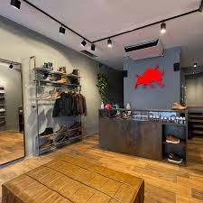

Faz mais de 70 anos que, aqui na Liana, a gente passou a se colocar no lugar das crianças e adultos e pensar no que seria melhor para elas. Não só em termos de calçados, mas em termos de mundo mesmo.
Por isso, além de termos produtos pensados especialmente para elas, fisiológicos e com materiais atóxicos e sustentáveis, a gente prioriza uma cadeia produtiva sustentável e relações empresariais e comerciais justas.
Porque tão importante quanto pensar em bons calçados para os pequenos, é se preocupar com o lugar por onde esses pequenos vão caminhar. Liana. Fazer o bem, um passinho por vez.
Todos os direitos reservados.